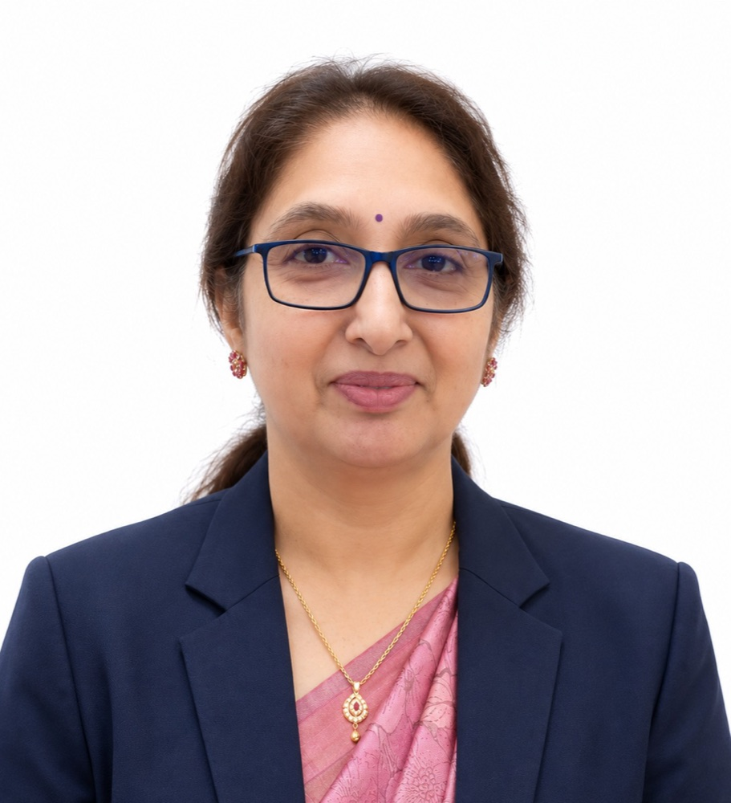
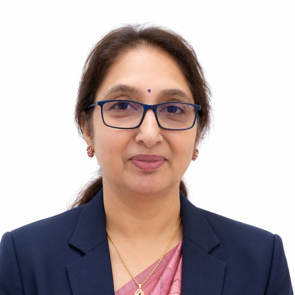

Dr. P. ShaliniAssociate ProfessorSystematic Literature Review on Marketing Analytics
AIP Conference Proceedings, Vol. 3345, 020157, 2026
Maps two decades of research on how firms use data and AI to make smarter marketing decisions.

Dr. P. ShaliniAssociate Professor · Department of Management Studies
Systematic Literature Review on Marketing Analytics
AIP Conference Proceedings, Vol. 3345, 020157, 2026
with S. Sudha, S. Vennilaa Shree & T. C. Catherin
Maps two decades of research on how firms use data and AI to make smarter marketing decisions.
- 421documents reviewed
- 125Web of Science journals
- 1,161authors
- 53countries
Key themes
- Firm capabilities through big data
- Customer value co-creation
- Business models for marketing analytics
- Digitalisation
- MA ecosystems
- Sustainable MA
Theoretical frameworks
Resource-Based ViewData capture, top management support, insight technology, firm capability
Triple Bottom Line TheorySustainable business models, long-term customer value, competitiveness
Distinct significance
Two decades of marketing analytics, mappedDrawing on 421 documents from 125 Web of Science journals (2002–2024), the review uses co-citation analysis to bring scattered research together and sets out nine future research directions.